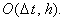

|
В заключение приведём сравнительную характеристику рекомендуемых
для использования разностных схем, аппроксимирующих одномерное дифференциальное
уравнение в частных производных 1-го порядка:
1. Неявная разностная схема с аппроксимацией производной по координате правой конечной разностью
Имеет порядок аппроксимации 
Абсолютно устойчива при v < 0.
Решается с помощью рекуррентного соотношения:
Для решения требуется задание правого граничного условия по координате x, т.е.
2. Неявная разностная схема с аппроксимацией производной по координате левой конечной разностью
Имеет порядок аппроксимации
Абсолютно устойчива при v > 0.
Решается с помощью рекуррентного соотношения:
Для решения требуется задание левого граничного условия по координате x, т.е.
Таким образом, определяющим фактором при выборе разностной
схемы для аппроксимации одномерного дифференциального уравнения в частных производных 1-го порядка
является знак параметра v.
Сформулируем правило выбора конечной разности
для аппроксимации производной первого порядка по координате в зависимости от знака стоящего перед
ней параметра v: для того, чтобы разностная схема была устойчива (условно устойчива в
случае явной разностной схемы и абсолютно устойчива в случае неявной разностной схемы) при
положительном v для аппроксимации первой производной по координате следует использовать
левую конечную разность, при отрицательном v - правую конечную разность. Кроме этого,
для решения разностной схемы при положительном v потребуется левое граничное условие, при
отрицательном v - правое граничное условие.
Отметим, что данное правило применимо только в случае, если
производная первого порядка по координате находится в левой части дифференциального уравнения
(т.е., если дифференциальное уравнение представлено в виде (5.1),
для которого проводились все исследования). Если же первая производная по координате находится в
правой части дифференциального уравнения, то её необходимо перенести в левую и только затем
применять правило выбора конечной разности.
|